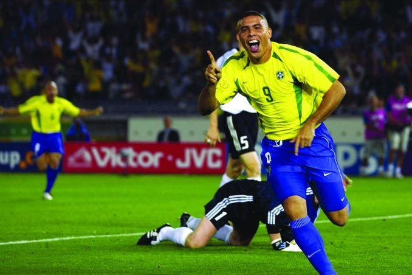

The Best: 2 days to go
Jan. 15, 2022
There are just two days left until the winners of The Best FIFA Football Awards™ are revealed!
Only two goalkeepers have made the podium. Oliver Kahn finished runner-up to Ronaldo in 2002 – the same year during which the Brazil No9 got the better of the Germany No1 In the 2002 FIFA World Cup Korea/Japan final™ – before Manuel Neuer came third in 2014.
All the winners of The Best FIFA Football Awards™ 2021, including the recipients of the FIFA Fan Award and the FIFA Fair Play Award,will be crowned on 17 January during a TV show broadcast live from the Home of FIFA in Zurich.